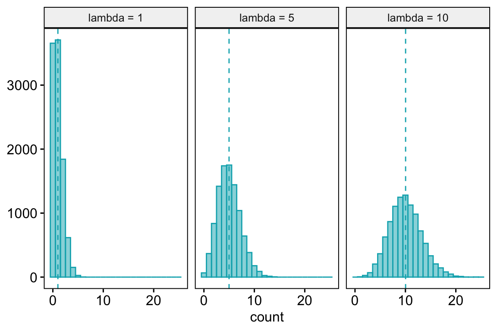
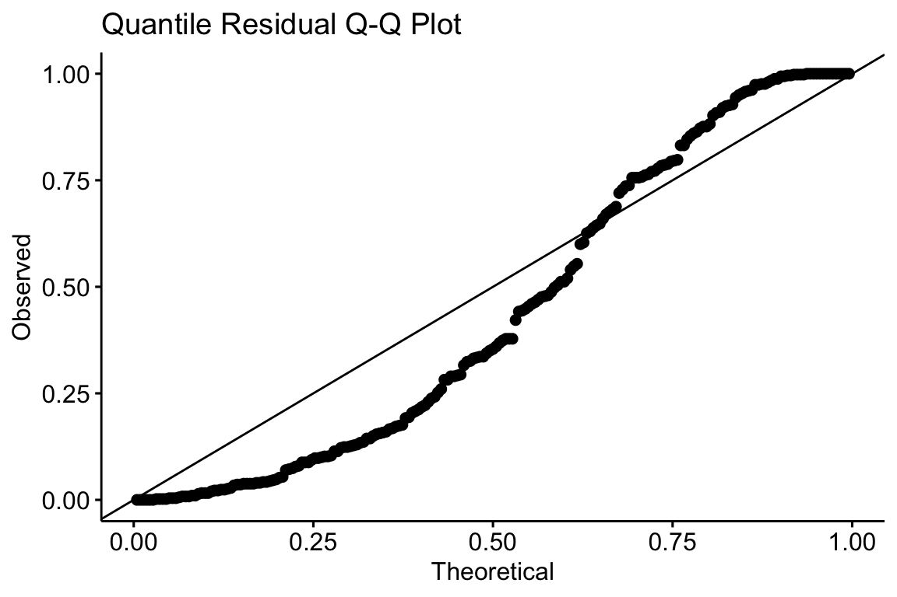
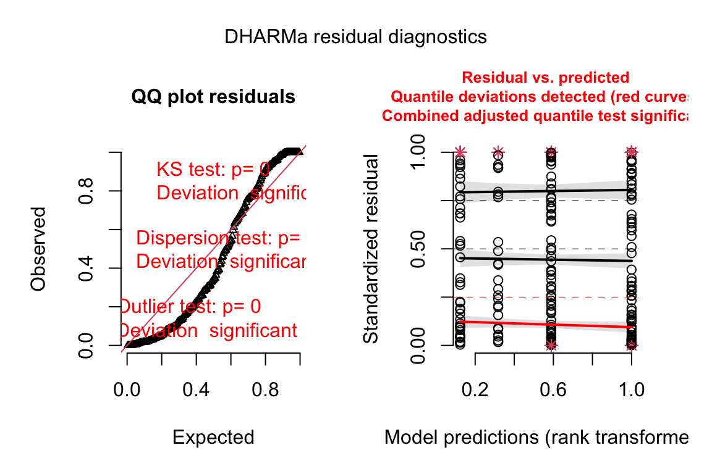
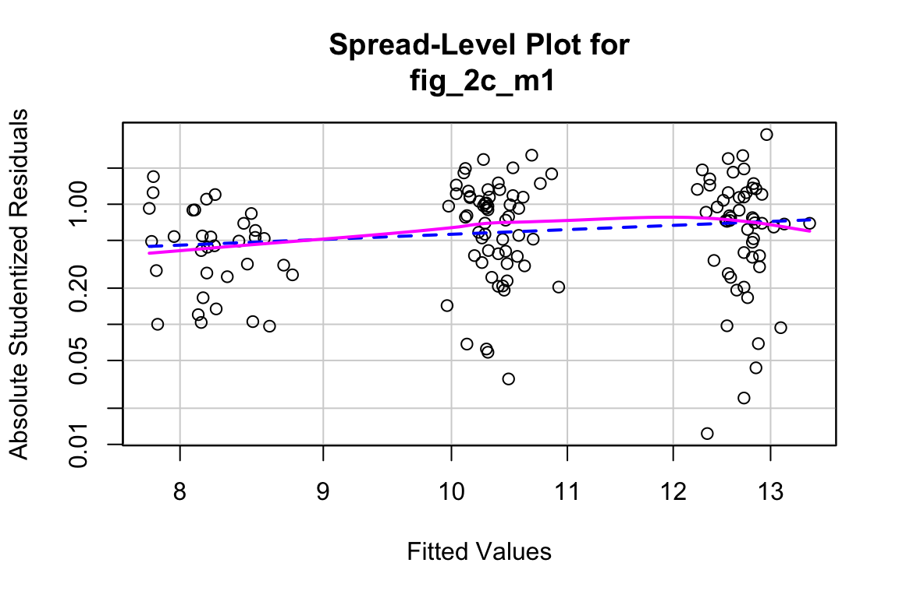
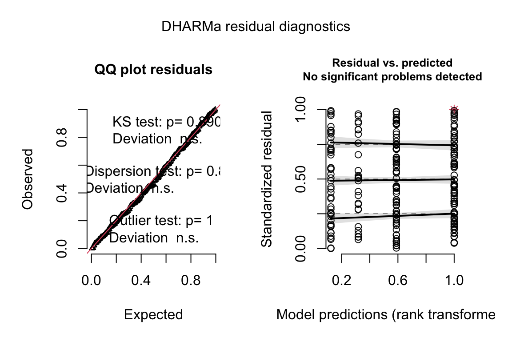

Chapter 17 Linear models for count data – Generalized Linear Models I
Biologists frequently count stuff, and design experiments to estimate the effects of different factors on these counts. For example, the effects of environmental mercury on clutch size in a bird, the effects of warming on parasite load in a fish, or the effect of exercise on RNA expression.
Count data differ from data with normal error in many ways, including 1) counts are discrete, and can be zero or positive integers only, 2) counts tend to bunch up on the small side of the range, creating a distribution with a positive skew, 3) a sample of counts can have an abundance of zeros, and 4) the variance of counts increases with the mean (see Figure 17.1 for some of these properties). Some count data can be approximated by a normal distribution and reasonably modeled with a linear model but more often, count data are modeled with Poisson distribution or negative binomial distribution using a generalized linear model (GLM). Poisson and negative binomial distributions are discrete probability distributions with two important properties: 1) the distribution contains only zero and positive integers and 2) the variance is a function of the mean. Back before modern computing and fast processors, count data were often analyzed by either transforming the response or by non-parametric hypothesis tests. One reason to prefer a statistical modeling approach with a GLM is that we can get interpretable parameter estimates. By contrast, both the analysis of transformed data and non-parametric hypothesis tests are really tools for computing “correct” \(p\)-values.

Figure 17.1: Histogram of the count of a trematode parasite larvae in Control vs. Infected fish. Fish in the Infected treatment are infected with a tapeworm.
17.1 The generalized linear model
As outlined in section [Assumptions for inference with statistical models] in Chapter 1, a common way that biological researchers think about a response variable is
\[\begin{align} y_i &= \beta_0 + \beta_1 x_i + \varepsilon_i \\ \varepsilon &\sim N(0, \sigma) \tag{17.1} \end{align}\]
That is, we can think of a response as the sum of some systematic part and “random errror,” which is a random draw from a normal distribution with mean zero and variance \(\sigma^2\). This way of thinking about the generation of the response is useful for linear models, and model checking linear models, but is not useful for generalized linear models or model checking generalized liner models. For example, if we want to model the number of parasites that have infected a fish using a Poisson distribution, the following is the wrong way to think about the statistical model
\[\begin{align} y_i &= \beta_0 + \beta_1 x_i + \varepsilon_i\\ \varepsilon &\sim Poisson(\lambda) \tag{17.2} \end{align}\]
That is, we should not think of a count as the sum of a systematic part and a random draw from a Poisson distribution. Why? Because it is the counts (or the counts conditional on \(X\)) that are poisson distributed, not the residuals from the fit model.
Thinking about the distribution of count data using model (17.2) leads to absurd consequences. For example, if we set the mean of the Poisson “error” to zero (like with a normal distribution), then the error term for every observation would have to be zero (because the only way to get a mean of zero with non-negative integers is if every value is zero). Or, if the study is modeling the effect of a treatment on the counts (that is, the \(X\) are dummy variables) then \(\beta_0\) is the expected mean count of the control (or reference) group. But if we add non-zero Poisson error to this, then the mean of the control group would be larger than \(\beta_0\). This doesn’t make sense. And finally, equation (17.2) generates a continuous response, instead of an integer, because \(\beta_0\) and \(\beta_1\) are continuous.
A better way to think about the data generation for a linear model, because this naturally leads to the correct way to think about data generation for a generalized linear model, is
\[\begin{align} y_i &\sim N(\mu_i, \sigma)\\ \mathrm{E}(Y|X) &= \mu\\ \mu_i &= \beta_0 + \beta_1 x_i \tag{17.3} \end{align}\]
That is, a response is a random draw from a normal distribution with mean \(mu\) (not zero!) and variance \(\sigma^2\). Line 1 is the stochastic part of this specification. Line 3 is the systematic part.
The specification of a generalized linear model has both stochastic and systematic parts but adds a third part, which is a link function connecting the stochastic and systematic parts.
- The stochastic part, which is a probability distribution from the exponential family (this is sometimes called the “random part”) \[\begin{equation} y_i \sim \mathrm{Prob}(\mu_i) \end{equation}\]
- the systematic part, which is a linear predictor (I like to think about this as the deterministic part) \[\begin{equation} \eta=\mathbf{X}\boldsymbol{\beta} \end{equation}\]
- a link function connecting the two parts \[\begin{equation} \eta_i = g(\mu_i) \end{equation}\]
\(\mu\) (the Greek symbol mu) is the conditional mean (or expectation \(\mathrm{E}(Y|X)\)) of the response on the response scale and \(\eta\) (the Greek symbol eta) is the conditional mean of the response on the link scale. A GLM models the response with a distribution specified in the stochastic part. The probability distributions introduced in this chapter are the Poisson and Negative Binomial. The natural link function for the Poisson and Negative Binomial is the “log link,” \(\eta = log(\mu)\). More generally, while each distribution has a natural (or, “canonical”) link function, one can use alternatives. Given this definition of a generalized linear model, a linear model is a GLM with a normal distribution and an Identity link (\(\eta = \mu\)).
When modeling counts using the Poisson or negative binomial distributions with a log link, the link scale is linear, and so the effects are additive on the link scale, while the response scale is nonlinear (it is the exponent of the link scale), and so the effects are multiplicative on the response scale. If this doesn’t make sense now, an example is worked out below. The inverse of the link function backtransforms the parameters from the link scale back to the response scale. So, for example, a prediction on the response sale is \(\mathrm{exp}(\hat{\eta})\) and a coefficient on the response scale is \(\mathrm{exp}(b_j)\).
17.2 Count data example – number of trematode worm larvae in eyes of threespine stickleback fish
The example is an experiment measuring the effect of the parasitic tapeworm Schistocephalus solidus infection on the susceptibility of infection from a second parasite, the trematode Diplostomum pseudospathaceum, in the threespine stickleback fish Gasterosteus aculeatus5. The treatment levels are “Control” (unexposed to the tapeworm), “Uninfected” " (exposed to the tapeworm but uninfected), “Infected LG” (exposed and infected with the low growth population of the tapeworm), and “Infected HG” (exposed and infected with the high growth population of tapeworm). The response is the number of trematode larvae counted in the eyes (right and left combined) of the fish. A histogram of the counts is shown in Figure 17.1 for the control and Infected HG treatment levels.
17.2.1 Modeling strategy
NHST blues – Students are often encouraged by textbooks, colleagues, or the literature to start the analysis by first “testing” assumptions with hypothesis tests – for example using a Shaprio-Wilks test of normality as a decision rule to decide if to use a parametric test such as a \(t\)-test or ANOVA if the null hypothesis of normality is not rejected, or a non-parametric test such as a Mann-Whitney U test if the null hypothesis of normality is rejected. I advise against this, because 1) this pre-test filtering automatically invalidates the \(p\)-value of the hypothesis test as it does not adjust for the filtering procedure, 2) real data are only approximately normal and as \(n\) increses, a normality test will reject any real dataset, and 3) hypothesis tests are pretty robust to non-normality anyway.
Instead of testing assumptions of a model using formal hypothesis tests before fitting the model, a better strategy is to 1) fit a model, and then do 2) model checking using diagnostic plots, diagnostic statistics, and simulation.
With these data, a researcher would typically fit a GLM with a Poisson or negative binomial distribution and log link. Here, I start with a linear model to illustrate the interpretation of diagnostic plots with non-normal data. I use the “linear model” specification (equation (17.1)) because the diganostic plots for model checking a linear model use the residuals of the fit model.
\[\begin{align} Diplo\_intensity_i &= \beta_0 + \beta_1 Uninfected_i + \beta_2 Infected\_LG_i + \beta_3 Infected\_HG_i + \varepsilon_i \\ \varepsilon &\sim N(0, \sigma) \tag{17.4} \end{align}\]
17.2.2 Checking the model I – a Normal Q-Q plot
Figure 17.2A shows a histogram of the residuals from the fit linear model. The plot shows that the residuals are clumped at the negative end of the range, which suggests that a model with a normally distributed conditional outcome (or normal error) is not well approximated.

Figure 17.2: Diagnostic plots of stickleback parasite data. A) Distribution of the residuals of the fit linear model. B) Normal Q-Q plot of the residuals of the fit linear model.
A better way to investigate this is with the Normal Q-Q plot in Figure 17.2B, which plots the sample quantiles for a variable against their theoretical quantiles. If the conditional outcome approximates a normal distribution, the points should roughly follow the line. Instead, for the worm data, the points are above the line at both ends. At the left (negative) end, this means that we aren’t seeing the most negative values that would be expected (the observed values are more positive than the theoretical values). Remembering that this plot is of residuals, if we think about this as counts, this means that our smallest counts are not as small as we would expect given the mean and a normal distribution. This shouldn’t be surprising – the counts range down to zero and counts cannot be below zero. At the positive end, the sample values are again more positive than the theoretical values. Thinking about this as counts, this means that are largest counts are larger than expected given the mean and a normal distribution. This pattern is exactly what we’d expect of count data, or at least count data that borders zero.
Intuition Pump – Let’s construct a Normal Q-Q plot. A quantile (or percentile) of a vector of numbers is the value of the point at a specified percentage rank. The median is the 50% quantile. The 95% confidence intervals are at the 2.5% and 97.5% quantiles. In a Normal Q-Q plot, we want to plot the quantiles of the residuals against a set of theoretical quantiles.
- To get the observed quantiles, rank the residuals of the fit linear model from most negative to most positive – these are your quantiles! For example, if you have \(n=145\) residuals, then the 73rd point is the 50% quantile.
- A theoretical quantile from the normal distribution can be constructed using the
qnormfunction which returns the normal quantiles for a specified vector of percents. Alternatively, one could randomly sample \(n\) points usingrnorm. These of course will be sampled quantiles so will only approximate the expected theoretical quantiles, but I add this here because we use this method below.
Now simply plot the observed against theoretical quantiles. Often, the standardized quantiles are plotted. A standardized variable has a mean of zero and a standard deviation of one and is computed by 1) centering the vector at zero by subtracting the mean from every value, and 2) dividing each value by the standard deviation of the vector. Recognize that because a standard deviation is a function of deviations from the mean, it doesn’t matter which of these operations is done first. A standardized theoretical quantile is specified by qnorm(p, mean = 0, sd = 1), which is the default.
Below, I’ve plotted the standardized observed and theoretical quantiles against the vector of percents (from 0 to 100%). This plot also nicely shows how the residuals of the worm data deviate from that expected if these had a normal distribution. The plot nicely shows that the most negative observed quintiles are not as negative as expected given a normal distribution, which again makes sense because this would imply negative counts since the mean is close to zero. And it nicely shows that the most positive observed quantiles are more positive than expected given a normal distribution, again this makes sense in right skewed count data. Finally, the plot nicely shows that the median is less positive than that expected given a normal distribution, which is at the mean (a right skew tends to pull the mean to the right of the median).

17.2.3 Checking the model II – scale-location plot for checking homoskedasticity

A linear model also assumes the error has constant variance (that is, the error variance is not a function of the value of \(X\)), or homoskedasticity. The fit model can be checked for homoskedasticity using a scale-location plot, which is a scatterplot of the positive square-root of the standardized residuals against the fitted values6. If the residuals approximate a normal distribution, then a regression line through the scatter should be close to horizontal. The regression line in the scale-location plot of the fit of the linear model to the worm data shows a distinct increase in the “scale” (the square root of the standardized residuals) with increased fitted value, which is expected of data that are lognormally, Poisson, or negative binomially distributed.
17.2.4 Two distributions for count data – Poisson and Negative Binomial
The pattern in the normal Q-Q plot in Figure 17.2B should discourage one from modeling the data with a normal distribution and instead model the data with an alternative distribution using a Generalized Linear Model. There is no unique mapping between how data are generated and a specific distribution, so this decision is not as easy as thinking about the data generation mechanism and then simply choosing the “correct” distribution. Section 4.5 in Bolker (xxx) is an excellent summary of how to think about the generating processes for different distributions in the context of ecological data. Since the response in the worm data are counts, we need to choose a distribution that generates integer values, such as the Poisson or the negative binomial.
- Poisson – A Poisson distribution is the probability distribution of the number of occurrences of some thing (an egg, a parasite, or a specific mRNA transcript) generated by a process that generates the thing at a constant rate per unit effort (duration or space). This constant rate is \(\lambda\), which is the expectation, so \(\mathrm{E}(Y) = \mu = \lambda\). Because the rate per effort is constant, the variance of a Poisson variable equals the mean, \(\sigma^2 = \mu = \lambda\). Figure ?? shows three samples from a Poisson distribution with \(\lambda\) set to 1, 5, and 10. The plots show that, as the mean count (\(\lambda\)) moves away from zero, a Poisson distribution 1) becomes less skewed and more closely approximates a normal distribution and 2) has an increasingly low probability of including zero (less than 1% zeros when the mean is 5).
A Poisson distribution, then, is useful for count data in which the conditional variance is close to the conditional mean. Very often, biological count data are not well approximated by a Poisson distribution because the variance is either less than the mean, an example of underdispersion7, or greater than the mean, an example of overdispersion8. A useful distribution for count data with overdispersion is the negative binomial.

- Negative Binomial – The negative binomial distribution is a discrete probability distribution of the number of successes that occur before a specified number of failures \(k\) given a probability \(p\) of success. This isn’t a very useful way of thinking about modeling count data in biology. What is useful is that the Negative Binomial distribution can be used simply as way of modeling an “overdispersed” Poisson process. The mean of a negative binomial variable is \(\mu = k\frac{p}{1-p}\) and the variance is \(\sigma^2 = \mu + \mu^2/k\). As a method for modeling an overdispersed Poisson variable, \(k\) functions as a **dispersion parameter* controlling the amount of overdispersion and can be any real, positive value (not simply a positive integer), including values less than 1.
17.2.5 Fitting a GLM with a Poisson distribution to the worm data
Let’s fit a GLM with a Poisson distribution to the worm data. The model is
\[\begin{align} Diplo\_intensity_i &\sim Poisson(\mu_i)\\ \mathrm{E}({Diplo\_intensity|Treatment}) &= \mu\\ \mu_i &= \mathrm{exp}(\eta_i)\\ \eta_i &= \beta_0 + \beta_1 Uninfected_i + \beta_2 Infected\_LG_i + \beta_3 Infected\_HG_i \end{align}\]
- The first line of the model is the stochastic part stating the response is modeled as a random Poisson variable with mean and variance \(\mu\) (the rate parameter \(\lambda\) of the Poisson distribution).
- The second line states the \(\mu\) is the conditional mean or conditional expectation
- The third line connects the conditional mean on the link scale (\(\eta\)) with the conditional mean on the response scale (\(\mu\))
- The fourth line is the linear predictor, and includes three dummy variables.
Remember that the conditional mean is the expected/predicted/fitted/modeled value when \(X=x_i\).
17.2.6 Model checking fits to count data
we use the fit model to check 1. the overall similarity of observed and theoretical distributions 2. if the observed distribution is over or under dispersed 3. if there more zeros than expected by the theoretical distribution. If so, the observed distribution is zero-inflated
17.2.6.1 Model checking a GLM I – the quantile residual Q-Q plot
A quantile-quantile (Q-Q) plot is used to check overall similarity of the observed distribution with the distribution that would be expected under the model. An alternative to a Normal Q-Q plot for a GLM fit is a quantile residual Q-Q plot of observed vs. expected quantile residuals. The basic algorithm for this is
- Use the model parameters to simulate \(p\) fake values of the response for each row of the data. This will be a \(n \times p\) matrix of fake data where each column is a new, random sample of a population with parameters equal to that estimated for the observed data. For the Poisson, the parameter for each observation will be \(\hat{\mu}_i\), the modeled value of observation \(i\). For the negative binomial, the parameters will be \(\hat{\mu}_i\) and the dispersion parameter \(k\), which is the same for all observations.
- For each observation (each row of the matrix of fake data), compute the fraction of simulated values smaller than the observed value of the response variable for that row. This fraction is the observed quantile residual, which ranges in value from 0 to 1. If the true data are distribitued as that specified by the model, then quantile residuals will have a uniform distribution.
- Sort the observed quantile residuals from smallest to largest and plot against theoretical quantile residuals from a uniform distribution. One could transform the quantile residuals to standard, normal residuals and then plot using a traditional Normal Q-Q plot but this step isn’t necessary (if reported, a Normal Q-Q plot of transformed quantile residuals might confuse readers who failed to read the fine print).
Misconceivable – A common misconception is that if the distribution of the response approximates a Poisson distribution, then the residuals of a GLM fit with a Poisson distribution should be normally distributed, which could then be checked with a Normal Q-Q plot, and homoskedastic, which could be checked with a scale-location plot. Neither of these is true because a GLM does not transform the data and, in fact, the model definition does not specify anything about the distribution of an “error” term – there is no \(\varepsilon\) in the model defintion above! This is why thinking about the definition of a linear model by specifying an error term with a normal distribution can be confusing and lead to misconceptions when learning GLMs.

The Q-Q plot using quantile residuals with a Poisson distribution indicates that the counts of Diplostomum larvae in the eyes of the threespine stickleback are not well approximated by a Poisson distribution – there are too many observed values near the ends of the expected tails, indicating the expected values are not spread out enough. This pattern emerges because the observed counts are overdispersed compared to a Poisson distribution.
17.2.6.2 Model checking a GLM II – a dispersion plot
If observed counts are Poisson distributed, then the Pearson residuals (\(r_i\)) and the residual degrees of freedom of the fit model (\(df\)) can be used to compute a dispersion statistic
\[\begin{equation} \frac{\sum{r_i}}{df} \end{equation}\]
that has an expected value of 1. Instead of a formal hypothesis test of this statistic, I use a simulation approach and ask, “if the observed counts are Poisson distributed, what is the expected frequency distribution of this dispersion statistic?” and then use simulation to generate this expected distribution. The algorithm for this is
- For each observation \(i\), generate a random Poisson count using \(\hat{\mu}\) as the parameter.
- Fit the model and compute the dispersion statistic.
- Repeat 1 and 2 \(N_{iter}\) times.
The plot below shows a histogram of the dispersion statistic computed for 1000 simulations of the worm data. The observed dispersion statistic is 3.4. The expected value is 1.0. The mean of the simulated values is 1.

Figure 17.3: Observed vs. expected dispersion statistic. The observed statistic marked by the red line. The histogram of expected statistics are from 1000 simulations of the observed data.
17.2.7 Fitting a GLM with a Negative Binomial distribution to the worm data
The model is
\[\begin{align} Diplo\_intensity &\sim NB(\mu, k)\\ \mathrm{E}({Diplo\_intensity|Treatment}) &= \mu\\ \mu &= \mathrm{exp}(\eta)\\ \eta &= \beta_0 + \beta_1 Uninfected + \beta_2 Infected\_LG + \beta_3 Infected\_HG \end{align}\]
This model specifies a negative binomial distribution but otherwise is just like that above specifying a Poisson distribution.
17.2.7.1 Model checking

A quantile residual Q-Q plot of the GLM model fit with negative binomial distribution is illustrated above. This looks pretty good.
17.2.7.2 Model means and coefficients
In a Generalized Linear Model of counts using either a Poisson or negative binomial distribution, modeled means, coefficients, and contrasts can be reported either on the link or response scale. Remember, the response scale is a count, while the link scale is a log(count).
The modeled means on the link scale are
## Treatment emmean SE df asymp.LCL asymp.UCL
## Control 1.82 0.0804 Inf 1.66 1.98
## Uninfected 1.50 0.1093 Inf 1.29 1.72
## Infected LG 1.62 0.1362 Inf 1.36 1.89
## Infected HG 2.36 0.0714 Inf 2.22 2.50
##
## Results are given on the log (not the response) scale.
## Confidence level used: 0.95While the means on response scale are
## Treatment response SE df asymp.LCL asymp.UCL
## Control 6.18 0.497 Inf 5.28 7.24
## Uninfected 4.50 0.492 Inf 3.63 5.58
## Infected LG 5.07 0.691 Inf 3.89 6.63
## Infected HG 10.60 0.757 Inf 9.22 12.20
##
## Confidence level used: 0.95
## Intervals are back-transformed from the log scaleA mean on the response scale is simply the exponent of the mean on the link scale. For example, the mean of the Control treatment level on the response scale is \(\mathrm{exp}(1.821408) = 6.180555\).
The CIs on the link scale are symmetric around the mean but those on the response scale are not. This is a feature, not a bug. Remember that counts are right skewed which means a CI will have a wider right than left interval. Check this!
If a plot includes a 1 SE error bar on the response scale, this is technically correct but it encourages the practice of computing CIs using the 2*SE rule of thumb. This rule breaks down for count data with right skewed distributions.
Plotting the response scale CIs is both technically correct and makes the 2*SE rule of thumb unnecessary.
The model coefficients on the link scale are
## contrast estimate SE df asymp.LCL asymp.UCL z.ratio p.value
## Uninfected - Control -0.317 0.136 Inf -0.583 -0.0514 -2.339 0.0193
## Infected LG - Control -0.197 0.158 Inf -0.507 0.1126 -1.248 0.2122
## Infected HG - Control 0.540 0.108 Inf 0.329 0.7504 5.019 <.0001
##
## Results are given on the log (not the response) scale.
## Confidence level used: 0.95Backtransforming the coefficients (but not the intercept) to the response scale (using \(\mathrm{exp}{b_j}\)) results in a response ratio.
## contrast ratio SE df asymp.LCL asymp.UCL z.ratio p.value
## Uninfected / Control 0.728 0.0988 Inf 0.558 0.95 -2.339 0.0193
## Infected LG / Control 0.821 0.1298 Inf 0.602 1.12 -1.248 0.2122
## Infected HG / Control 1.715 0.1845 Inf 1.389 2.12 5.019 <.0001
##
## Confidence level used: 0.95
## Intervals are back-transformed from the log scale
## Tests are performed on the log scale- Note how the emmeans package reports the name of the term as the ratio of the coefficient term to the intercept term (the reference treatment level). Why are the coefficients tranformed to ratios on the response scale? Remember that a coefficient is a difference in conditional means and that \(\mathrm{exp}(B-A) = \frac{\mathrm{exp}(B)}{\mathrm{exp}(A)}\). For a dummy variable as here (say “Infected HG”), the response ratio is
\[\begin{equation} RR_{Infected\_HG} = \frac{\overline{Infected\_HG}}{\overline{Control}} \end{equation}\]
which give us the relative effect of Infected_HG compared to the Control. Relative effects could be reported as a response ratio in a table, or in the text it could be reported as a percent “Infected HG fish had 71.5% (95%CI: 38.9% - 111.8%) more Diplostomum larvae than Control fish.” Where do these percents come from? The percent effect is \(100(RR_j - 1)\) larger than the reference mean if the \(RR_j > 1\) or \(100(1 - RR_j)\) smaller than the reference mean if the \(RR_j < 1\).
Backtransforming the intercept does not generate a ratio since the intercept on the link scale is not a difference. For the worm analysis, the intercept on the link scale is the mean count of the control group on the link scale and the backtransformed intercept is the mean count of the control group on the response scale.
Effects on the response scale are not additive but multiplicative! So, for example, the mean of the Infected HG treatment level on the response scale is \(\overline{Control}*RR_{Infected\_HG}\) (remember that with a linear model the mean would be \(b_{Control} + b_{Infected\_HG}\)). Check and see if this works.
17.3 Working in R
Fitting a GLM to count data. The poisson family is specified with the base R glm() function. For negative binomial, use glm.nb from the MASS package
# poisson - less likely to fit to real biological data well because of overdispersion
fit <- glm(y ~ treatment, family = "poisson", data = dt)
# two alternatives to overdispersed poisson fit
# quasipoisson
fit <- glm(y ~ treatment, family = "quasipoisson", data=dt)
# negative binomial - more likely to fit to real biological data well
# note that "family" is not an argument since this function is used only to fit a negative binomial distribution!
fit <- glm.nb(y ~ treatment, data = dt)Fitting a GLM to a continuous conditional response with right skew. The Gamma family is specified with the base R glm() function.
fit <- glm(y ~ treatment, family = Gamma(link = "log"), data = dt)Fitting a GLM to a binary (success or failure, presence or absence, survived or died) response
The binomial family is specified with base R glm() function.
# if the data includes a 0 or 1 for every observation of y
fit <- glm(y ~ treatment, family = "binomial", data = dt)
# if the data includes the frequency of success AND there is a measure of the total n
dt[ , failure := n - success]
fit <- glm(cbind(success, failure) ~ treatment, family = "binomial", data = dt)Fitting Generalized Linear Mixed Models
Generalized linear mixed models are fit with glmer from the lmer package.
# random intercept of factor "id"
fit <- glmer(y ~ treatment + (1|id), family = "poisson", data = dt)
# random intercept and slope of factor "id"
fit <- glmer(y ~ treatment + (treatment|id), family = Gamma(link = "log"), data = dt)
# Again, negative binomial uses a special function
fit <- glmer.nb(y ~ treatment + (treatment|id), data = dt)Another good package for GLMMs is glmmTMB from the glmmTMB package
# negative binomial
fit <- glmmTMB(y ~ treatment + (1|id), family="nbinom2", data = dt)
# nbinom1, the mean variance relationship is that of quasipoisson
fit <- glmmTMB(y ~ treatment + (1|id), family="nbinom1", data = dt)17.3.1 Fitting a GLM to count data
Source publication: Benesh, D. P., & Kalbe, M. (2016). Experimental parasite community ecology: intraspecific variation in a large tapeworm affects community assembly. Journal of Animal Ecology, 85(4), 1004-1013.
Source data URL: https://datadryad.org/resource/doi:10.5061/dryad.bq8j8
Source file: “Lab_exp.csv”
Poisson fit. A quantile residual Q-Q plot can be generated using the package DHARMa
fit.pois <- glm(Diplo_intensity ~ Treatment, family="poisson", data=worm)
# from the DHARMa package
n_sim <- 250
simulationOutput <- simulateResiduals(fittedModel = fit.pois, n = n_sim)
plot(simulationOutput, asFactor = F)
A plot of the dispersion statistic can be generated using the object returned by the SimulateOutput function but with refit = TRUE, which refits a model each iteration. This refitting isn’t necessary if only the quantiile residuals are needed. The Dharma package does not divide the sum of squared Pearson residuals by the residual degrees of freedom and so the expected value of the statistic is \(df\).
# from the DHARMa package
n_sim <- 250
simulationOutput <- simulateResiduals(fittedModel=fit.pois, n=n_sim, refit=TRUE)
testDispersion(simulationOutput)
##
## DHARMa nonparametric dispersion test via mean deviance residual fitted
## vs. simulated-refitted
##
## data: simulationOutput
## dispersion = 3.3788, p-value < 2.2e-16
## alternative hypothesis: two.sidedNegative binomial fit.
fit.nb <- glm.nb(Diplo_intensity ~ Treatment, data=worm)
# from the DHARMa package
simulationOutput <- simulateResiduals(fittedModel = fit.nb, n = n_sim)
plot(simulationOutput, asFactor = F)
# link scale
emm <- emmeans(fit.nb, specs="Treatment")
emm## Treatment emmean SE df asymp.LCL asymp.UCL
## Control 1.82 0.0804 Inf 1.66 1.98
## Uninfected 1.50 0.1093 Inf 1.29 1.72
## Infected LG 1.62 0.1362 Inf 1.36 1.89
## Infected HG 2.36 0.0714 Inf 2.22 2.50
##
## Results are given on the log (not the response) scale.
## Confidence level used: 0.95summary(contrast(emm, method="trt.vs.ctrl", adjust="none"), infer=c(TRUE, TRUE))## contrast estimate SE df asymp.LCL asymp.UCL z.ratio p.value
## Uninfected - Control -0.317 0.136 Inf -0.583 -0.0514 -2.339 0.0193
## Infected LG - Control -0.197 0.158 Inf -0.507 0.1126 -1.248 0.2122
## Infected HG - Control 0.540 0.108 Inf 0.329 0.7504 5.019 <.0001
##
## Results are given on the log (not the response) scale.
## Confidence level used: 0.95# response scale
emm.response <- emmeans(fit.nb, specs="Treatment", type="response")
summary(contrast(emm, method="trt.vs.ctrl", adjust="none", type="response"), infer=c(TRUE, TRUE))## contrast ratio SE df asymp.LCL asymp.UCL z.ratio p.value
## Uninfected / Control 0.728 0.0988 Inf 0.558 0.95 -2.339 0.0193
## Infected LG / Control 0.821 0.1298 Inf 0.602 1.12 -1.248 0.2122
## Infected HG / Control 1.715 0.1845 Inf 1.389 2.12 5.019 <.0001
##
## Confidence level used: 0.95
## Intervals are back-transformed from the log scale
## Tests are performed on the log scale17.3.2 Fitting a generalized linear mixed model (GLMM) to count data
17.3.3 Fitting a generalized linear model to continouus data
17.4 Problems
Analyze the data that went into Fig 6B of Tena, A., Pekas, A., Cano, D., Wäckers, F. L., & Urbaneja, A. (2015). Sugar provisioning maximizes the biocontrol service of parasitoids. Journal of Applied Ecology, 52(3), 795-804.
- Compute contrasts and CIs among all pairs of all three treatment levels
- Make a better plot like 6b including 1) use the modeled mean instead of the simple group mean and 2) use the modeled CI of the mean instead of the SE computed within each group independently.
source URL: https://datadryad.org/resource/doi:10.5061/dryad.bj001
source file: “4_Parastism_Fig_6.csv”
Benesh, D. P., & Kalbe, M. (2016). Experimental parasite community ecology: intraspecific variation in a large tapeworm affects community assembly. Journal of Animal Ecology, 85(4), 1004-1013↩︎
fitted values are the predicted values, \(\hat{Y}\)↩︎
the variance is less than that expected by the probability model↩︎
the variance is greater than that expected by the probability model↩︎